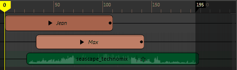
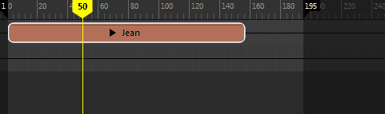
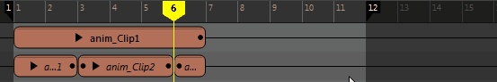
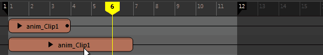

文件(File)
“文件”(File)菜单选项可用于在时间编辑器中导入和导出文件。
- 从场景选择中添加动画(Add Animation from Scene Selection)

- 添加内容选自“大纲视图”(Outliner)或“视口”(Viewport)的片段。单击“从场景选择中添加动画”(Add Animation from Scene Selection) >
 ，以打开“将动画添加到时间编辑器”(Add Animation to the Time Editor)选项。另请参见使用时间编辑器片段。
注： 您还可以将文件从“文件”(File)或内容浏览器拖动到时间编辑器中，或者使用时间编辑器的“快速启动”(Quick Start)图标将选定内容添加到场景中。
，以打开“将动画添加到时间编辑器”(Add Animation to the Time Editor)选项。另请参见使用时间编辑器片段。
注： 您还可以将文件从“文件”(File)或内容浏览器拖动到时间编辑器中，或者使用时间编辑器的“快速启动”(Quick Start)图标将选定内容添加到场景中。 - 从场景选择中添加姿势(Add Pose from Scene Selection)
- 使用当前选定对象的值创建一帧片段。选择值基于在通道盒中设置的值。请参见使用时间编辑器匹配姿势。
- 导入(Import)
-
- 导入动画片段...(Import Animation Clip...)
- 打开文件浏览器，以便能够将动画文件导入时间编辑器的当前时间标记位置。
注： 在将动画添加到时间编辑器时，必须首先存在要将场景中的已有动画添加到的对象或绑定。如果要导入动画源，请改用“仅导入动画源...”(Import Animation Source Only...)。
- 有关如何将动画导入时间编辑器的步骤，请参见将动画导入时间编辑器。
- 导入音频片段...(Import Audio Clip...)
- 打开文件浏览器，以便能够找到要在时间编辑器中添加到新音频轨迹的音频片段。请参见使用时间编辑器片段。时间编辑器支持 .wav 和 .aiff 音频文件格式。Maya 不支持 .mp3 音频格式。
- 仅导入动画源...(Import Animation Source Only...)
- 打开文件浏览器，以便能够选择要导入时间编辑器的动画源。时间编辑器动画源是在时间编辑器中驱动对象/角色的动画文件。可以按住 Ctrl 键并一次选择多个要导入的动画源，从而创建一个可用于时间编辑器合成的动画源库。
- 动画源位于时间编辑器的“源”(Source)菜单中和大纲视图(Outliner)中的“时间编辑器”(Time Editor)节点下。
- 若要将动画源添加到时间编辑器轨迹，请使用鼠标中键将动画源拖动到具有相同层次的片段上，以便将动画重映射到该片段。请参见使用时间编辑器重映射动画。
注： 在将动画文件拖动到时间编辑器轨迹时，必须首先存在要将场景中的已有动画添加到的对象。
- 导出(Export)
-
- 导出选定对象...(Export Selected...)
- 打开“导出选定片段”(Export Selected Clip)文件浏览器，用于将片段另存为 mayaAscii (.ma) 或 mayaBinary (.mb) 文件。
- 单击 以打开时间编辑器的“导出当前选择”(Export Selction)选项
- 将所有片段导出到 FBX...(All Clips to FBX...)
- 将选定片段/所有片段另存为 .fbx 文件。
- 打开游戏导出器(Open Game Exporter)

- 打开“游戏导出器”(Game Exporter)，用于将动画片段发送到游戏引擎。请参见将时间编辑器片段导出到游戏导出器。
- 打开内容浏览器(Open Content Browser)

- 打开“内容浏览器”(Content Browser)，可以在其中将示例文件加载到时间编辑器。
-
禁用/取消禁用时间编辑器(Mute/Unmute Time Editor)

- 暂时禁用“时间编辑器”(Time Editor)，以便调整动画。“禁用/取消禁用时间编辑器”(Mute/Unmute Time Editor)选项用于断开所有属性以创作新动画（包括“约束”(Constraints)、“设置受驱动关键帧”(Set Driven Keys)等），使您能够切换回 Maya 的非时间编辑器驱动模式。请参见禁用时间编辑器。
- 此操作的热键是 Q。
- 时间编辑器首选项...(Time Editor Preferences...)
- 打开“动画”(Animation)首选项（在“设置”(Settings)下）窗口，从中可以滚动到“时间编辑器”(Time Editor)区域，然后调整“粒度”(Granularity)、“捕捉容差”(Snap Tolerance)和“最小片段宽度”(Minimum Clip Width)设置，以及激活或禁用“视图中消息”(In-View Messages)和“允许创建片段来覆盖现有约束”(Allow clip creation to override existing constraints)。
- 实时刷新(Real Time Refresh)
- 暂时挂起默认场景重画，以便您可以重新定位或编辑轨迹上的片段。处理大型场景、进行通常会触发刷新的调整、创建使精确编辑工作变得很难的不便时间滞后时，此选项很有用。
- 时间编辑器热键...(Time Editor Hotkeys...)
- 打开热键编辑器，以便能够针对时间编辑器操作（例如，轨迹创建以及禁用和单放）创建自己的热键。
视图(View)
“视图”(View)菜单选项可用于修改时间编辑器中帧的外观。这些选项还会显示为菜单栏下方的图标。
- 框选全部(Frame All)
- 使用场景中的所有动画对象填充时间视图。此选项的热键是 A。
-

- 框显当前选择(Frame Selection)
- 仅用选定的动画对象填充时间视图。此选项的热键是 F。
-

- 框显播放范围(Frame Playback Range)
- 显示从开始帧到结束帧的片段。此选项的热键是 G。
-

- 居中当前时间(Center Current Time)
- 在时间编辑器的中心框显当前时间标记。此选项的热键是 T。
- 组(Group)
-
- 在“本地时间”选项卡中打开(Open in Local Time Tab)
- 打开“本地时间”(Local Time)选项卡，可查看“组”(Group)片段内的数据及其原始计时。有关创建“本地时间”(Local Time)选项卡的信息，请参见为组片段创建选项卡；有关全局和局部计时的说明，请参见时间编辑器中的全局和局部计时。
编辑(Edit)
“文件”(File)菜单选项可用于对时间编辑器片段执行基本编辑操作。
- 撤消/重做(Undo/Redo)
- 反转/恢复上一操作的效果。
- 删除(Delete)
- 从时间编辑器中移除所选对象。
- 剪切(Cut)
- 从时间编辑器中移除当前选择，然后将其复制到要粘贴的剪贴板。
- 复制/粘贴(Copy/Paste)
- 复制/粘贴选定对象。
注： 此菜单中的“复制/粘贴”(Copy/Paste)选项特定于您在时间编辑器中执行的操作。如果当活动窗口不是时间编辑器（例如，“视口”(Viewport)）时撤消“复制/粘贴”(Copy/Paste)操作，则不会对时间编辑器有任何影响，反之亦然。
- 在当前帧分割片段(Split Clip at Current Frame)

- 在当前时间标记位置将选定片段一分为二。

- 此操作的热键是 W。
- 剪去前方(Trim Before)

- 在当前时间标记位置将选定片段一分为二，然后删除前面的部分。

- 此操作的热键是 G。
- 剪去后方(Trim After)

- 在当前时间标记位置将选定片段一分为二，然后删除后前的部分。

- 此操作的热键是 H。
- 将起点帧/终点缩放到当前帧(Scale Start/End to Current Frame)
- 将选定片段的起点或终点拉伸至当前时间标记位置。

- 重置计时(Reset Timing)
- 将选定片段移回第一帧。
- 裁剪边缘编辑模式(Clip Edge Edit Mode)
-
激活以下节点，以交互方式执行下列操作。
-
-
修剪(Trim)

- 用于设置片段的输入和输出点，这样只有原始源的一部分影响片段。从“编辑模式”(Edit Mode)菜单中选择“修剪”(Trim)，然后将光标放到片段的左边或右边。请注意光标外观的变化。拖动光标即可修剪。

片段顶部的负数表示已修剪的帧数。
子片段上的白点表示它因父片段而修剪。如果子片段太小而无法显示，则不显示白点。

已修剪片段上的黑点表示在片段之外有动画。
有关详细信息，请参见时间编辑器片段符号。
-
提示： “修剪”(Trim)模式是时间编辑器的默认“编辑”(Edit)模式。也可以在选择片段后按住 E 键来激活“修剪”(Trim)模式。
-
比例(Scale)

- 用于加快或减慢片段的动画速度。从“编辑模式”(Edit Mode)菜单中选择“缩放”(Scale)，然后将光标放到片段的左边或右边。请注意光标外观的变化。拖动光标即可缩放。

缩放百分比将显示在片段的顶部。
提示： 也可以在选择片段后按住 R 键来激活“缩放”(Scale)模式。注： 系统将在片段的修剪边或延伸边处显示一些特殊符号，用于说明内部所含动画的状态。有关详细信息，请参见时间编辑器片段符号。 -
循环(Loop)

- 用于多次按顺序重复片段的动画。从“编辑模式”(Edit Mode)菜单中选择“循环”(Loop)，将光标放到片段的左边或右边，然后拖动以进行循环。

若要调整循环，请单击并拖动片段的已循环区域的边。显示的“之后的循环”(Loop After)值（上图中为 0.3）表示片段包含的循环数。如果循环片段的左侧，则它是“之前的循环”(Loop Before)值。 缩放、修剪或循环片段时，片段的虚拟边界将变为实际边界以执行所有编辑操作。
提示： 也可以在选择片段后按住 T 键来激活“循环”(Loop)模式。 - 通过“属性编辑器”(Attribute Editor)中的“之前的片段循环模式”(Clip Loop Before Mode)/“之后的片段循环模式”(Clip Loop After Mode)，您可以分别在片段的开始和结束处设置循环。您可在其中找到两类循环模式：“周期”(Cyclical)模式会重复动画本身，而“渐进”(Progressive)模式会在偏移的基础上重复动画，因此可用于创建循环行走。有关这两种循环方法的说明，请参见时间编辑器中的循环类型。
-
注： 应用“保持”(Hold)或“循环”(Looping)之后，片段无法分割。可以改为先将其变为组片段，然后再进行分割。
-
注： 若要使用具有循环片段的动画层，请从该片段创建组片段，然后将层添加到组。
- 请参见：
- 保持(Hold)
- 用于延伸片段的最后一个姿势帧，使其保持指定的一段时间。从“编辑模式”(Edit Mode)菜单中选择“保持”(Hold)，然后将光标放置到片段的左边或右边。请注意光标外观的变化。将光标拖动到所需的“保持”(Hold)长度。
-
提示： 也可以在选择片段后按住 Y 键来激活“保持”(Hold)模式。
-
注： 应用“保持”(Hold)或“循环”(Looping)之后，片段无法分割。可以改为先将其变为组片段，然后再进行分割。
-
修剪(Trim)
轨迹(Tracks)
“轨迹”(Tracks)菜单选项可用于创建时间编辑器片段所在的时间编辑器轨迹。时间编辑器有三种轨迹类型：“动画”(Animation)、“音频”(Audio)和“形状”(Shape)。尽管时间编辑器中的大部分工作都是通过动画轨迹完成，但是您既不能在“动画”(Animation)轨迹上添加“音频”(Audio)或“融合变形”(Blend shape)片段，也不能在相同轨迹上添加不同片段类型，例如，无法将“音频”(Audio)片段和“动画”(Animation)片段同时放到一个轨迹上。
请参见使用时间编辑器轨迹。
- 动画轨迹(Animation Track)
- 将动画轨迹添加到时间编辑器。选择此菜单选项时，如果轨迹处于选中状态，则会在选定轨迹处添加新轨迹。选择此菜单选项时，如果未选中轨迹，则新轨迹会显示在活动合成的结尾处。有关公用轨迹操作，请参见使用时间编辑器轨迹。
- 若要移除轨迹，请在轨迹上单击鼠标右键，然后从时间编辑器“片段”(Clip)上下文菜单中选择“删除轨迹”(Delete Tracks)。
- 音频轨迹(Audio Track)
- 将音频轨迹添加到时间编辑器。选择此菜单选项时，如果轨迹处于选中状态，则会在选定轨迹处添加新轨迹。选择此菜单选项时，如果未选中轨迹，则新轨迹会显示在活动合成的结尾处。
- 若要移除轨迹，请在轨迹上单击鼠标右键，然后从时间编辑器“片段”(Clip)上下文菜单中选择“删除轨迹”(Delete Tracks)。
- 删除轨迹(Delete Tracks)
- 从“轨迹”(Track)视图中删除选定轨迹。
- 禁用(Mute) /单放(Solo)
- 用于隔离时间编辑器轨迹，以便仅播放该轨迹。请参见使用时间编辑器轨迹。
-
- 禁用轨迹
- 通过“禁用”(Mute)
 可以暂时禁用轨迹并防止播放。禁用某个轨迹后，它在时间视图中将变暗，且“禁用”(button)按钮将变为红色。
可以暂时禁用轨迹并防止播放。禁用某个轨迹后，它在时间视图中将变暗，且“禁用”(button)按钮将变为红色。
-

-
若要禁用轨迹，请执行以下操作：
- 在名单中单击相应轨迹的“禁用”(Mute)图标 ，或在轨迹上单击鼠标右键并选择“禁用”(Mute)。
- 若要禁用多个轨迹，请按住 Shift 键并选择这些轨迹，然后单击“禁用”(Mute)图标。
注： 若要完全临时禁用时间编辑器（而不仅仅是单个轨迹）以便创建新动画，请参见禁用时间编辑器。 - 在名单中单击相应轨迹的“禁用”(Mute)图标
- 取消禁用轨迹(Unmute Tracks)/取消禁用所有轨迹(Unmute All Tracks)
- 重新激活选定/所有轨迹。
- 单放轨迹
- 通过“单放”(Solo) 可以挑出一个时间编辑器轨迹，以便仅播放该轨迹。这会禁用其他轨迹，使您可以专注于隔离场景中的动画。
-

-
单放轨道
- 在名单中单击相应轨迹的“单放”(Solo)图标 。单放某个轨迹后，时间视图中的剩余轨迹将暗显，且“禁用”(Mute)按钮将变为黄色。
- 若要单放多个轨迹，请按住 Shift 键并选择这些轨迹，然后单击“单放”(Solo)图标。
- 添加到单放轨迹(Add to Soloed Tracks)
-

- 将任何选定轨迹添加到已设置为单放的轨迹。
注： 按住 Shift 键并在时间编辑器的名单(Roster)区域中选择多个轨迹。
- 撤消单放(Undo Soloing)
- 将所有轨迹设置为活动状态。
片段(Clip)
“片段”(Clip)菜单选项可用于管理在时间编辑器中选择的片段。
- 分组(Group)

- 将选定片段组合成一个组片段。请参见将多个片段合并为组片段。

- 此操作的热键是 Ctrl+G。
- 解组(Ungroup)
- 解组选定组片段并将组内的所有片段恢复到本地时间。
注： 如果包含组片段的轨迹没有其他片段，则轨迹也会被删除。注： 仅当选择组片段时，该选项才处于活动状态。
- 此操作的热键是 Ctrl+Shift+G。
- 层(Layers)
-
- 创建覆盖(Create Override)
- 将选定对象的“覆盖层”(Override Layer)添加到时间编辑器。请参见将片段层添加到时间编辑器。
- 创建相加(Create Additive)
- 将选定对象的“相加层”(Additive Layer)添加到时间编辑器。请参见将片段层添加到时间编辑器。
- 创建过渡(Create Transition)
- 创建选定片段之间的桥接过渡。有关如何创建过渡的信息，请参见创建时间编辑器片段之间的过渡。
- 移除过渡(Remove Transition)
- 撤消在选定片段之间创建的任何过渡。有关如何创建过渡的信息，请参见创建时间编辑器片段之间的过渡。
- 图形权重曲线(Graph Weight Curve)
-
注： 此选项不可用于音频片段。
- 在曲线图编辑器(Graph Editor)中打开动画片段以调整权重。当两个或多个片段在时间上重叠并驱动相同的元素时，可以通过设置用于控制片段相对影响的权重来将其混合在一起。有关使用曲线图编辑器更改片段动画的信息，请参见在曲线图编辑器中修改时间编辑器片段。
- 通过调整片段的权重，可以控制它相对于生成的动画中其他片段的影响程度。混合权重越高，片段对动画的影响就越大。混合组片段是在更高的级别融合动画的一种简单方法。有关片段权重的详细信息，请参见设置时间编辑器片段权重的关键帧。
- 重映射(Remapping)
-
- 重映射(Remap)
- 打开名单映射器，以便将片段的动画应用于时间编辑器中的另一个对象。请参见使用时间编辑器重映射动画。
- 从名称空间重映射和创建片段(Remap and Create Clip from Namespace)
- 展开该选项可列出场景中的所有可映射名称空间。有关详细信息，请参见按名称空间重映射动画。
- 重影(Ghost)
- 用于可视化每个片段的影响。请参见通过时间编辑器重影预览动画。
- 重命名片段...(Rename Clip...)
- 可用于为选定片段输入新名称。
- 选择受驱动对象(Select Driven Objects)
-
注： 此选项不可用于音频片段。
- 选择在特定片段/组片段内进行分组、受动画影响的所有元素。
- 这在使用 HumanIK 绑定时很有用，可确保已选择所有受影响的动画控制器，而不考虑应用于绑定的 HIK 设置关键帧模式（例如，“全身”(Full Body)和“身体部位”(Body Part)）。
- 有关使用 HumanIK 角色绑定的详细信息，请参见在时间编辑器中为 HumanIK 角色设置动画。
- 使动画源唯一(Make Animation Source Unique)
-
注： 仅当将时间编辑器动画源用于多个片段时，该选项才可用。
- 将选定片段的动画源设置为独立，使您能够编辑选定片段的动画，而不影响任何其他共享同一动画源的片段。
- 例如，如果复制粘贴一个片段，则它们之间将共享动画源，且复制动画曲线会降低性能。相反，此设置可以使时间编辑器仅复制所需的数据。
- 使用“使动画源唯一”(Make Animation Source Unique)创建独立片段的一个例外情况是：您将多个运动捕捉数据行为（例如，不同的空手道动作）存储在一个动画文件中。在这种情况下，请勿将动画源切割成多个片段。应改为使用时间编辑器菜单栏中的创建仅包含相关分段的唯一动画源；这将创建该动画源的单独迭代。
重定时(Retime)
“重定时”(Retime)菜单选项可用于调整时间编辑器动画片段中关键帧移动的计时。
- 创建和编辑时间扭曲(Create and Edit Time Warp)
- 为选定的片段创建时间扭曲曲线。有关详细信息，请参见使用时间编辑器创建和编辑时间扭曲。
- 创建和编辑速度曲线(Create and Edit Speed Curve)
- 为选定的片段创建速度曲线。有关详细信息，请参见通过速度曲线改变片段速度。
- 已启用(Enabled)
- 显示“时间扭曲”(Time Warp)/“速度曲线”(Speed Curve)是否在片段上处于活动状态。
- 编辑(Edit)
- 在曲线图编辑器(Graph Editor)中打开曲线。
- 重置(Reset)
- 撤消对“时间扭曲”(Time Warp)/“速度曲线”(Speed Curve)所做的任何更改，并将其还原为默认状态。
- 删除(Delete)
- 删除“时间扭曲”(Time Warp)/“速度曲线”(Speed Curve)。
- 转换为时间扭曲(Convert to Time Warp)
- 将速度曲线更改为时间扭曲曲线。有关差异的说明，请参见在时间编辑器中更改片段计时。
重新定位(Relocate)
时间编辑器重定位器是一个可用于重新定位和偏移动画放置的标记。“重新定位”(Relocate)选项可用于创建、选择和管理重定位器。
- 创建重定位器(Create Relocator)

- 为选定动画创建一个重定位器，这是可用于将动画角色移动到其他位置的标记。对于具有重定位器的片段，在片段名称旁边标有
 图标。
注：
图标。
注：- 您可以在片段根的平均位置和旋转处找到重定位器。若要查看重定位器，请从时间编辑器菜单栏主题中的“重新定位”(Relocate)菜单选择“选择重定位器”(Select Relocator)。
- 如果动画片段由多个根驱动，请改为选择“重新定位 > 创建重定位器”(Relocate > Create Relocator) > 以打开Relocator Options(重定位器选项)。在其中，您可以从列表中（包括场景中的所有根对象）创建一个重定位器。
- 请参见通过重新定位重新确定角色的方向。
- 编辑重定位器(Edit Relocator)
- 打开重定位器选项(Relocator Options)窗口，您可在其中为已创建的重定位器设置或更改自定义重定位器。
- 选择重定位器(Select Relocator)
- 为选定轨迹选择“重定位器”(Relocator)。
- 重置重定位器(Reset Relocator)
- 将角色还原为其在场景中的初始位置，但是保留“重定位器”(Relocator)标记，以便继续重新定位角色。
- 移除重定位器(Remove Relocator)
- 从场景中删除“重定位器”(Relocator)。
- 匹配重定位器...(Match Relocators...)
- 打开匹配选项(Matching Options)窗口。有关如何匹配动画片段的信息，请参见使用时间编辑器重定位器匹配姿势。
烘焙(Bake)
“烘焙”(Bake)菜单选项可用于将多个时间编辑器动画片段合并为一个片段。
- 烘焙到新片段/烘焙到新片段并删除(Bake to New Clip/Bake to New Clip and Delete)
-

- 用于将选定的片段合并为单个片段，仅创建在已合并的片段中所需的最小数量的关键帧。删除原始动画（如果已指定）。
- 烘焙片段后，可以对其执行编辑操作，就好像它是单个片段一样。请参见在时间编辑器中编辑动画。
注： 可以将“烘焙到新片段”(Bake to new Clip)用于组片段或多个选定片段。
- 有关烘焙片段的详细信息，请参见烘焙时间编辑器片段。
- 烘焙到场景/烘焙到场景并删除(Bake to Scene/Bake to Scene and Delete)
- 将选定片段合并到场景中。删除原始动画（如果已指定）。
- 展平层(Flatten Layers)
-

- 将选定片段的所有动画层合并为一个层。请参见在层片段上设置关键帧。
注： 必须具有多个层才能展平层。
源(Sources)
- 创建片段(Create Clip)
- 将场景或大纲视图中的选定动画源作为片段添加到选定动画轨迹。
- 重映射到名称空间并从名称空间创建片段(Remap to Namespace and create Clip from Namespace)
- 将选定动画源重映射到选定对象并创建片段。
- 应用到场景(Apply to Scene)
- 将动画源添加到场景。
- 导出(Export)...
- 打开“导出动画源”(Export Anim Source)窗口，可以在其中将选定动画源另存为 Maya ASCII (.ma) 或二进制 (.mb) 文件。